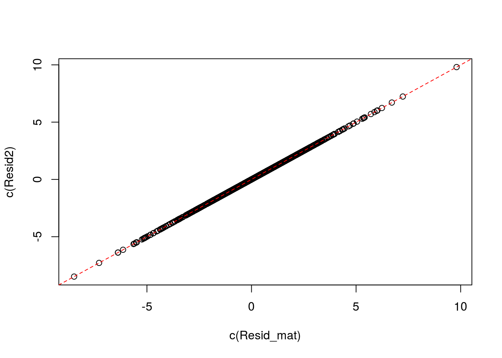

I show that the variance estimates are the same whether we use Wang et al’s approach or Gagnon-Bartsch et al’s approach.
set.seed(1)
n <- 11
p <- 103
q <- 3
k <- 2
pi0 <- 0.8
X <- model.matrix(~sample(x = c(0, 1), size = n, replace = TRUE, prob = c(1/2, 1/2)))
colnames(X) <- c("Intercept", "Treatment")
Beta <- matrix(rnorm(k * p), nrow = k)
which_null <- sample(x = c(TRUE, FALSE), size = p, replace = TRUE, prob = c(pi0, 1 - pi0))
Beta[2, which_null] <- 0
Z <- X %*% matrix(rnorm(k * q), nrow = k) + matrix(rnorm(n * q), nrow = n)
Alpha <- matrix(rnorm(q * p), nrow = q)
sig2_diag_true <- rchisq(n = p, df = 4) / 4
E <- matrix(rnorm(n * p), nrow = n) %*% diag(sqrt(sig2_diag_true))
Y <- X %*% Beta + Z %*% Alpha + EQ <- qr.Q(qr(X), complete = TRUE)
Q2 <- Q[, -c(1:2), drop = FALSE]
Y3 <- crossprod(Q2, Y) # The Wang matrix
Resid_mat <- Q2 %*% Y3 # The Gagnon-Bartsch MatrixResid_mat is actually the residualsResid2 <- Y - X %*% solve(t(X) %*% X) %*% t(X) %*% Y
plot(c(Resid_mat), c(Resid2))
abline(0, 1, col = 2, lty = 2)
library(vicar)
wout <- pca_naive(Y = Y3, r = q)
gout <- pca_naive(Y = Resid_mat, r = q)
plot(abs(c(wout$alpha)), abs(c(gout$alpha)), main = "alpha for wang vs for gb")
abline(0, 1, lty = 2)The alpha estimates are slightly different because we scale them by sqrt(nrow(Y)), where nrow(Y) is 11 in the residual matrix and 9 in the rotated matrix.
plot(wout$sig_diag, gout$sig_diag, main = "wang vs gb variances")
abline(0, 1)The same thing here, we divide the residual sums of squares by nrow(Y) - r, which is 8 in the Gagnon-Bartsch matrix and 6 in the Wang matrix.
However, I would imagine that any sane person would divide by nrow(Y) - k - q regardless because we already regressed out the observed covariates. If so, then the variance estimates are the exact same.
plot(wout$sig_diag, gout$sig_diag * (n - q) / (n - q - k), main = "wang vs (adjusted) gb variances")
abline(0, 1)w_ml <- fa_ml(Y = Y3, r = q)
g_ml <- fa_ml(Y = Resid_mat, r = q)For the MLE FA, it doesn’t seem to work out as exactly.
plot(abs(c(w_ml$alpha)), abs(c(g_ml$alpha)))
abline(0, 1, lty = 2, col = 2)plot(w_ml$sig_diag, g_ml$sig_diag, main = "wang vs gb variances")
abline(0, 1)plot(w_ml$sig_diag, g_ml$sig_diag * (n - q) / (n - k - q), main = "wang vs gb (adjusted) variances")
abline(0, 1)sessionInfo()## R version 3.3.2 (2016-10-31)
## Platform: x86_64-pc-linux-gnu (64-bit)
## Running under: Ubuntu 16.04.3 LTS
##
## locale:
## [1] LC_CTYPE=en_US.UTF-8 LC_NUMERIC=C
## [3] LC_TIME=en_US.UTF-8 LC_COLLATE=en_US.UTF-8
## [5] LC_MONETARY=en_US.UTF-8 LC_MESSAGES=en_US.UTF-8
## [7] LC_PAPER=en_US.UTF-8 LC_NAME=C
## [9] LC_ADDRESS=C LC_TELEPHONE=C
## [11] LC_MEASUREMENT=en_US.UTF-8 LC_IDENTIFICATION=C
##
## attached base packages:
## [1] stats graphics grDevices utils datasets methods base
##
## other attached packages:
## [1] vicar_0.1.6
##
## loaded via a namespace (and not attached):
## [1] Rcpp_0.12.12 tools_3.3.2 digest_0.6.12
## [4] annotate_1.48.0 evaluate_0.10.1 RSQLite_1.1-2
## [7] memoise_1.1.0 nlme_3.1-131 cate_1.0.4
## [10] lattice_0.20-34 mgcv_1.8-17 Matrix_1.2-8
## [13] DBI_0.6 yaml_2.1.14 parallel_3.3.2
## [16] genefilter_1.52.1 stringr_1.2.0 knitr_1.16
## [19] IRanges_2.4.8 S4Vectors_0.8.11 stats4_3.3.2
## [22] rprojroot_1.2 grid_3.3.2 Biobase_2.30.0
## [25] ruv_0.9.6 AnnotationDbi_1.32.3 survival_2.41-2
## [28] XML_3.98-1.8 rmarkdown_1.6 leapp_1.2
## [31] sva_3.18.0 corpcor_1.6.8 magrittr_1.5
## [34] splines_3.3.2 backports_1.0.5 htmltools_0.3.6
## [37] MASS_7.3-45 BiocGenerics_0.16.1 svd_0.4
## [40] assertthat_0.2.0 xtable_1.8-2 esaBcv_1.2.1
## [43] stringi_1.1.2This R Markdown site was created with workflowr